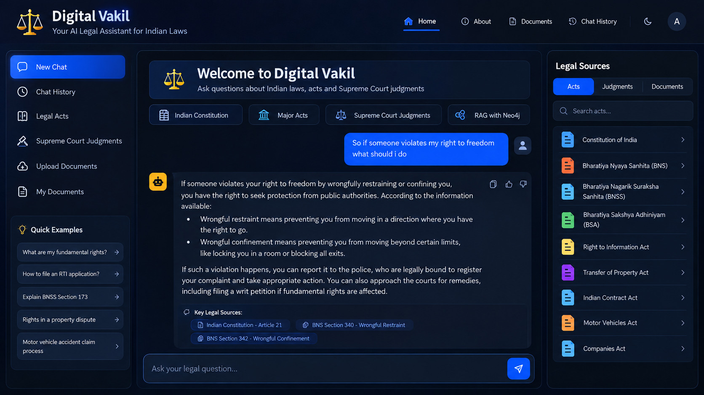

01 / GENAI⚖

AI RESPONSE
RETRIEVAL + KNOWLEDGE GRAPH
LEGAL AI · RAG
Digital Vakil
A legal-assistance prototype designed to retrieve relevant information from Indian laws and judgments, combining retrieval workflows with a knowledge-graph approach.
Browse GitHub repositories ↗PROJECT